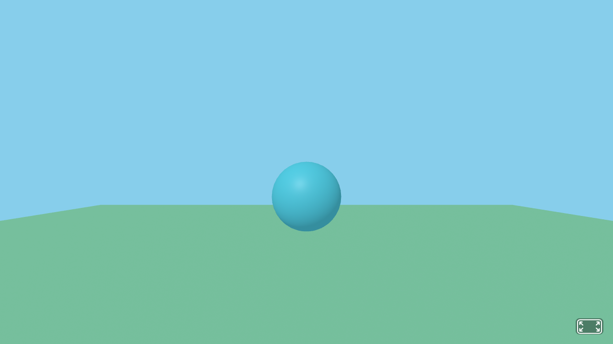
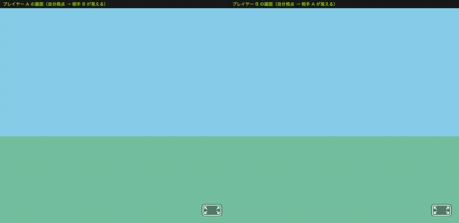
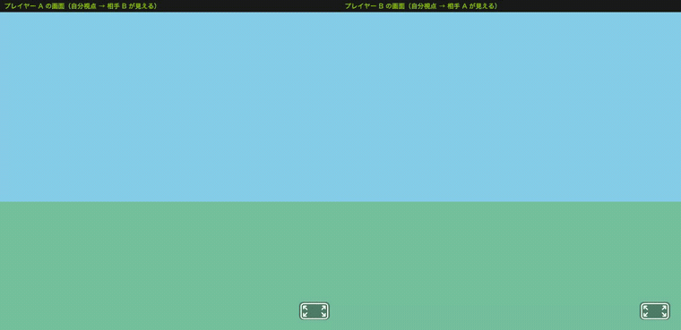

アバタの位置・回転情報の同期 ── A-Frame + Socket.IO でマルチユーザ3D空間を実現する
第9回では Socket.IO でテキストチャットを実装しました。
今回はA-Frame の3D空間と Socket.IO のリアルタイム通信を組み合わせ、複数ユーザが同じ3D空間を共有し、互いのアバターが見える仕組みを作ります。
いきなり完成形を作ると難しいので、小さく動かして少しずつ足していく進め方をします。例題でそれぞれの完全なコードを示します。
| 段階 | 作るもの | 新しく学ぶこと |
|---|---|---|
| Step 1 シングルプレイ | Node.js のサーバを立て、3D空間にスフィアを1つ置いて表示する | Express で public フォルダを配信する／A-Frame で1人で3D空間に入る |
| Step 2 マルチプレイ | 複数人が接続し、互いの位置を色違いのスフィアで同期する | Socket.IO で位置を送受信する／受信したらスフィアを作る・動かす・消す |
| Step 3 ゴール | スフィアを四角柱（胴体）＋スフィア（頭）の単純なアバターに置き換えて同期する | 複数パーツのアバターを a-entity でまとめる／向き（rotation）も同期する |
この Step 3 の完成（四角柱＋スフィアのアバター同期）が、この回のゴールであり標準課題です。
| 場面 | 何が同期されているか | 今回の仕組みとの対応 |
|---|---|---|
| オンラインゲーム （Fortnite / Minecraft） |
各プレイヤーのキャラクタの位置・向き・アクションがサーバ経由で全員に配信される。 | socket.emit('move', {position, rotation}) ＋ サーバが broadcast.emit で他全員に転送。これを毎秒10〜60回繰り返す。 |
| ビデオ会議 （Zoom / Teams） |
各参加者の映像枠が画面に並び、退室すると枠が消える。 | 本資料では映像枠 = アバター。connection でアバター生成、disconnect でアバター削除（クリーンアップ）。 |
| VRChat / cluster （メタバース） |
同じ仮想空間に集まった人のアバターが3Dで動き、しゃべると口が動く。 | 本資料の発展形。今回は箱 1個だが、構造はまったく同じ。position/rotation を定期送信 → 他クライアントが再描画。 |
どれも内部の仕組みは「自分の状態を周期的にサーバへ送る → サーバが他全員に配信 → 各クライアントが受信して再描画」という共通パターンで動いています。
| Q1. なぜ位置を「定期的に」送るの？ | キーやマウスの入力は非常に高頻度で発生するため、毎回送るとサーバに負荷がかかります。setInterval で 100ミリ秒ごと（毎秒10回）に間引いて送ることで、滑らかさと通信量のバランスを取ります。 |
Q2. なぜ broadcast.emit で「送信者以外」に送るの？ |
自分の位置は自分がすでに知っているからです。自分のアバターを自分の画面に出す必要もないので、サーバは「送信者本人を除いた全員」にだけ転送するのが効率的です。 |
Q3. position と rotation の単位は？ |
A-Frame では position はメートル単位の数値 (x, y, z)、rotation は度数法の角度 (x, y, z) です。Step 3 のアバターでは、向きを合わせるために rotation の y（左右の首振り）を使います。 |
| Q4. 接続している人が増えたらどうなる？ | 接続したぶんだけアバターが増えていきます。今回は人数が増えても「受信したら作る・動かす・消す」という同じ処理を繰り返すだけで対応できます。 |
第4〜8回で学んだ A-Frame（3D表示）と、第9回で学んだ Socket.IO（リアルタイム通信）を組み合わせます。
| 技術 | 役割 | この回での使い方 |
|---|---|---|
| Node.js + Express | サーバ | A-FrameのHTMLファイルを配信し、Socket.IO で接続を管理する |
| Socket.IO | リアルタイム通信 | 各ユーザのカメラ位置・回転データを他の全ユーザに送る |
| A-Frame | 3D表示 | 受信したデータをもとに、他ユーザのアバターを3D空間に表示・移動する |
io.on / socket.on / socket.broadcast.emit同期の心臓部は、サーバ（server.js）のたった3つの命令です。この3つがどう連携して「1人の動きを他の全員に伝える」のかを、まず仕組みから理解しましょう。
| 命令 | 意味（いつ・何をする） |
|---|---|
io.on('connection', socket => {…}) | 誰かが接続するたびに1回呼ばれる。中の socket は「その接続した1人」を指す。以降の socket.on はこの人専用の受信窓口。 |
socket.on('move', data => {…}) | その1人から 'move' が届くたびに呼ばれる。data に位置・向きが入っている。 |
socket.broadcast.emit('moved', …) | 受け取ったデータを「送信者本人を除いた」全員へ転送する。これで他の人の画面にだけアバターが反映される。 |
参考: io.emit は「自分も含めた全員」、socket.broadcast.emit は「自分以外の全員」、socket.emit は「その本人だけ」に送ります。アバター同期では自分以外の全員に送りたいので socket.broadcast.emit を使います。
io.on('connection') が1回ずつ呼ばれ、各人専用の socket ができる。socket.emit('move', …) で位置をサーバへ送る。socket」の socket.on('move') が発火し、data を受け取る。socket.broadcast.emit('moved', …) が、A以外のB・Cへ同じデータを配る。socket.on('moved') が発火し、Aのアバターを生成・移動する。アバターとは、3D空間内で各ユーザを表すエンティティです。今回はまず色違いのスフィア（a-sphere）から始め、最終的に四角柱（胴体）＋スフィア（頭）の単純なアバターに育てます。
A-Frame のカメラ（ユーザの視点）の position（位置: x, y, z）と rotation（回転: x, y, z）を定期的にサーバに送信します。
| データ | 内容 | 例 |
|---|---|---|
| position | 3D空間内のカメラ座標 | {x: 0, y: 1.6, z: 3} |
| rotation | カメラの向き（度数） | {x: 0, y: -45, z: 0} |
これらのデータを 一定間隔（例: 100ms ごと）で socket.emit('move', data) してサーバに送り、サーバが全クライアントに配信します。
なぜ定期送信なのか？
マウスやキーボードの入力イベントは非常に高頻度で発生します。すべてのイベントで送信すると、通信量が膨大になりサーバに負荷がかかります。setInterval で一定間隔に間引くことで、滑らかさと通信効率のバランスを取ります。
Step 2 ではアバターをシンプルに保つため、まず色違いのスフィアだけを同期します。他のユーザから位置データを受信したとき、そのユーザのスフィアがまだ無ければ新規生成し、すでにあれば位置を更新します。
処理を「探す」「無ければ作る」「位置を反映する」の3つの関数に分けると、各ステップが何をしているか明確になります。
※ JavaScript の変数は古い var ではなく、現在標準の const（再代入しない）／let（再代入する）を使います。
JavaScript（概念コード ── 関数に分割した版） // ① 既存アバターを ID で探す function findAvatar(userId) { const avatarId = 'avatar-' + userId; return document.getElementById(avatarId); } // ② アバターが無ければ新しいスフィアを作って scene に追加 function createAvatar(userId, color) { const avatar = document.createElement('a-sphere'); avatar.setAttribute('id', 'avatar-' + userId); avatar.setAttribute('radius', '0.5'); avatar.setAttribute('color', color); scene.appendChild(avatar); return avatar; } // ③ 位置を反映する function applyPosition(avatar, position) { avatar.setAttribute('position', position); } // メイン処理: 「探す → 無ければ作る → 位置を反映する」 socket.on('moved', (data) => { const userId = data.id; // 中間変数で読みやすく const color = data.color; const position = data.position; let avatar = findAvatar(userId); if (!avatar) { avatar = createAvatar(userId, color); } applyPosition(avatar, position); });
Step 3 では、この createAvatar を「四角柱＋スフィア」を作る関数に差し替え、さらに rotation（向き）も反映するように拡張します。仕組みは同じ「探す → 無ければ作る → 反映する」のままです。
🖐 やってみよう（1分）
スフィアの半径 (radius) を '0.5' から '1' に変えると、他ユーザのスフィアの大きさがどう変わるか想像してみよう。
Socket.IO では、接続するたびに各クライアントに一意の ID（socket.id）が自動で割り当てられます。
socket.id は "xK7-2abc..." のようなランダム文字列サーバの 'disconnect' イベントで、離脱したユーザの ID を全クライアントに通知し、各クライアントが該当のアバターを DOM から削除します。
| イベント | サーバの処理 | クライアントの処理 |
|---|---|---|
| connection | ユーザを一覧に追加、色を割り当て | （接続完了） |
| move | 受信した位置データを他の全員に転送 | 受信したデータでアバターを生成/更新 |
| disconnect | ユーザを一覧から削除、全員に通知 | 該当アバターをシーンから削除 |
📖 キーワード
| アバター | 3D空間内で各ユーザを表すエンティティ。まず色違いのスフィア、最終的に四角柱（胴体）＋スフィア（頭）を使用。他ユーザの存在と位置・向きを視覚的に示す。 |
| setInterval | 一定間隔でコールバック関数を実行するJavaScript関数。ここでは100msごとにカメラ位置をサーバに送信する用途で使う。 |
| position / rotation | 3D空間内のオブジェクトの位置(x,y,z)と回転角度(x,y,z)。カメラのこれらの値を送受信してアバターを同期する。 |
| クリーンアップ | ユーザ切断時にアバターをDOMから削除する処理。これを怠ると動かない「幽霊アバター」が残り続ける。 |
このゴール（四角柱＋スフィアのアバター同期）を、2つのブラウザで同時に動かした動画です。各画面は自分の視点で、相手の動きは色付きアバターとして表示され、移動がリアルタイムに同期されます。
socket.emit('move', ...) で送り、socket.broadcast.emit('moved', ...) で他クライアントのアバターを更新する。移動が両画面で同期している。以下に Step 1〜3 の完全なコードを示します。まずは読んで流れをつかみ、次の「コード体験」で実際に作って動かします。
S:\Web_Prog の中に Web10 フォルダを作成するS:\Web_Prog\Web10 を開くTerminal
npm init -y
npm install express@4 socket.io
⚠ 注意: Express は最新の v5 系ではなく、古い Node.js でも動く v4 系を使うため、必ず express@4 と @4 を付けてインストールしてください。
まずは通信なしの一番シンプルな構成です。Express で public フォルダを配信するサーバを立て、A-Frame の3D空間にスフィアを1つ置きます。これだけで、1人で3D空間を歩き回れます。
ファイル1: server.js（フォルダ直下に作成）
JavaScript ── server.js const express = require('express'); const app = express(); // public フォルダの中身をそのままブラウザに配信する app.use(express.static('public')); // 3000番ポートでサーバを起動する app.listen(3000, () => { console.log('http://localhost:3000 でサーバ起動'); });
ファイル2: public フォルダを作り、その中に index.html を作成
HTML ── public/index.html <!DOCTYPE html> <html lang="ja"> <head> <meta charset="UTF-8"> <title>アバター同期 Step 1 シングルプレイ</title> <script src="https://aframe.io/releases/1.7.1/aframe.min.js"></script> </head> <body> <a-scene> <!-- 床 --> <a-plane position="0 0 0" rotation="-90 0 0" width="20" height="20" color="#7BC8A4"></a-plane> <!-- スフィアを1つ置く --> <a-sphere position="0 1.25 -3" radius="0.5" color="#4CC3D9"></a-sphere> <!-- 空 --> <a-sky color="#87CEEB"></a-sky> </a-scene> </body> </html>
express.static('public') … public フォルダの中の index.html などを自動で配信する<a-sphere> … 球を1つ置くタグ。position（位置）、radius（半径）、color（色）を指定
node server.js → ブラウザで http://localhost:3000 を開き、水色のスフィアが見えればOK。まだ通信はしていません。
ここで Socket.IO を足します。各ユーザに色を割り当て、自分のカメラ位置を100msごとに送信。受け取った他ユーザの位置に色違いのスフィアを出し、動かし、抜けたら消します。
server.js を次のように書き換える（全文）
JavaScript ── server.js const express = require('express'); const http = require('http'); const { Server } = require('socket.io'); const app = express(); const server = http.createServer(app); const io = new Server(server); app.use(express.static('public')); // 接続したユーザに割り当てる色の候補 const colors = ['#EF2D5E', '#4CC3D9', '#FFC65D', '#7BC8A4', '#A24CD9']; io.on('connection', (socket) => { // このユーザの色を1つ決める const color = colors[Math.floor(Math.random() * colors.length)]; console.log('接続:', socket.id, '色:', color); // 移動データを受信 → 送信者以外の全員へ転送 socket.on('move', (data) => { socket.broadcast.emit('moved', { id: socket.id, color: color, position: data.position }); }); // 切断 → そのユーザのアバターを全員から消すよう通知 socket.on('disconnect', () => { console.log('切断:', socket.id); socket.broadcast.emit('userLeft', { id: socket.id }); }); }); server.listen(3000, () => { console.log('http://localhost:3000 でサーバ起動'); });
public/index.html を次のように書き換える（全文）
HTML ── public/index.html <!DOCTYPE html> <html lang="ja"> <head> <meta charset="UTF-8"> <title>アバター同期 Step 2 スフィア同期</title> <script src="https://aframe.io/releases/1.7.1/aframe.min.js"></script> <script src="/socket.io/socket.io.js"></script> </head> <body> <a-scene> <a-plane position="0 0 0" rotation="-90 0 0" width="20" height="20" color="#7BC8A4"></a-plane> <a-sky color="#87CEEB"></a-sky> </a-scene> <script> const socket = io(); const scene = document.querySelector('a-scene'); // 100ミリ秒ごとに自分のカメラ位置を送る setInterval(() => { const camera = document.querySelector('[camera]'); if (!camera) return; const position = camera.getAttribute('position'); socket.emit('move', { position: { x: position.x, y: position.y, z: position.z } }); }, 100); // 他ユーザの移動を受信 → スフィアを作る or 動かす socket.on('moved', (data) => { const id = 'avatar-' + data.id; let avatar = document.getElementById(id); if (!avatar) { avatar = document.createElement('a-sphere'); avatar.setAttribute('id', id); avatar.setAttribute('radius', '0.5'); avatar.setAttribute('color', data.color); scene.appendChild(avatar); } avatar.setAttribute('position', data.position); }); // 他ユーザが切断 → そのスフィアを消す socket.on('userLeft', (data) => { const avatar = document.getElementById('avatar-' + data.id); if (avatar) avatar.parentNode.removeChild(avatar); }); </script> </body> </html>
データの流れ（まとめ）
| 手順 | 場所 | 処理内容 |
|---|---|---|
| 1 | ユーザA（ブラウザ） | WASDキーで移動 → カメラの position が変わる |
| 2 | ユーザA（JavaScript） | setInterval で100msごとに位置を取得し、socket.emit('move', ...) で送信 |
| 3 | サーバ（Node.js） | socket.on('move') で受信 → socket.broadcast.emit('moved', ...) で他全員に転送 |
| 4 | ユーザB（JavaScript） | socket.on('moved') で受信 → ユーザAのスフィアを生成/位置更新 |
| 5 | ユーザB（A-Frame） | ユーザAの色違いスフィアが3D空間内で移動して見える |

http://localhost:3000 にアクセス。片方で動くと、もう片方に色違いのスフィアが現れて追従すればOK。
Step 3 はコピペせず、Step 2 を土台に自分で書き換えて完成させます。スフィアを四角柱（胴体）＋スフィア（頭）のアバターに置き換え、向き（rotation）も同期させましょう。下の設計図・やること・ヒントを手がかりに考えてください。（完成コードは「解答例」セクションに、公開日以降に表示されます）

アバターの設計図（a-entity の中に、胴体と頭を相対位置で組み立てる）
やること（Step 2 からの差分）
| ファイル | 変更内容 |
|---|---|
server.js | 'moved' で転送するデータに rotation: data.rotation を1行足す（向きも配るため） |
public/index.html ① | 送信する setInterval で、position に加えて rotation も emit する |
public/index.html ② | スフィア1個を作っていた部分を、箱＋スフィアを innerHTML で作る createAvatar(id, color) 関数に置き換える（大きさはデフォルトでOK） |
public/index.html ③ | 受信処理で、位置は y を 0 にして反映し、向きは rotation.y だけ反映する |
穴あきスケルトン（// TODO を自分で埋める。丸写しではなく、Step 2 と設計図から考える）
JavaScript ── public/index.html の script（穴あき） // 箱（胴体）＋スフィア（頭）のアバターを作る（大きさはデフォルトでOK） function createAvatar(id, color) { const avatar = document.createElement('a-entity'); avatar.setAttribute('id', id); // TODO: avatar.innerHTML に <a-box>（胴体, position="0 0.5 0"）と // <a-sphere>（頭, radius="0.4" position="0 1.3 0"）を入れる。色は両方 color。 return avatar; } socket.on('moved', (data) => { const id = 'avatar-' + data.id; let avatar = document.getElementById(id); if (!avatar) { // TODO: createAvatar(id, data.color) で作って scene に appendChild } // TODO: position を { x: …, y: 0, z: … } で反映（y は 0 にする） // TODO: rotation を { x: 0, y: data.rotation.y, z: 0 } で反映 });
考えるヒント
innerHTML にタグを文字列で入れるだけなので、Step 2 の createElement より短く書ける。色は ${'$'}{color} のように差し込む。position は親からの相対位置。だから胴体 0 0.5 0・頭 0 1.3 0 で「胴体の上に頭」になる。大きさはほぼデフォルトでよい（頭だけ radius="0.4" で少し小さくするとバランスがよい）。y を 0 に？ なぜ rotation.y だけ？ → 1.5・1.7 と上の設計図を読み返そう。例題の Step 1 → 2 → 3 を、自分の手で順番に作って動かします。各 Step のコードは上の「例題」からコピーできます。
例題のコードをそのまま使い、Step を1つずつ完成させていきます。各 Step が動いたことを確認してから次へ進みましょう。
| Step | やること | 動作確認 |
|---|---|---|
| 1 | server.js と public/index.html を作り、スフィアを1つ表示する | 1つのブラウザで水色のスフィアが見え、WASDで歩ける |
| 2 | Step 2 のコードに書き換え、サーバを再起動する | 2つのブラウザを開くと、互いに色違いのスフィアが現れて追従する |
| 3 | Step 3 を自分で組み立てて書き換える（ゴール＝標準課題） | 相手が四角柱＋スフィアのアバターになり、向きも同期する |
※ サーバ（server.js）を変更したら、ターミナルで Ctrl+C → もう一度 node server.js で再起動が必要です。index.html だけの変更は、ブラウザの再読み込み（F5）でOK。2つ目のブラウザは、別ウィンドウやシークレットウィンドウで開くと2人として扱われます。
例題の Step 1・Step 2 を作って動かしたうえで、Step 3 は穴あきスケルトンとヒントを手がかりに自分で組み立て、四角柱（胴体）＋スフィア（頭）のアバターが同期するゴールまで完成させなさい。さらに、下記の小さな改造を加え、理解問題に答えなさい。
① 必須 ── Step 3 を自分で組み立てて完成させる
// TODO を自分で埋めて、server.js と public/index.html を完成させる（丸写し禁止）② 小改造 ── 次の2つを行う
| # | 指示 | ヒント |
|---|---|---|
| 1 | アバターの見た目を変える（胴体の height か width、または頭の radius を変更） | createAvatar 内の setAttribute の値を変える |
| 2 | 3D空間に目印となるオブジェクトを2つ以上追加する | <a-scene> 内に <a-box> や <a-cylinder> などのタグを追加（位置・色は自由） |
③ 理解問題 ── 文章で答える
io.emit ではなく socket.broadcast.emit で「送信者以外」に転送するのか。理由を説明しなさい。y を使わず 0 にしているのはなぜか。説明しなさい。a-entity でまとめ、その中に胴体と頭を入れているのはなぜか。「親を動かすと…」という観点で説明しなさい。server.js と public/index.html のコード全体アバター同期プログラムを拡張し、各アバターの頭上にユーザ名が表示されるようにしてください。
必須要件
prompt でOK）a-text を使う）提出要件（2点セット）
| 提出物 | 内容 |
|---|---|
| 1. コード | server.js と public/index.html のコード全体をNotionノートに貼り付ける |
| 2. 音声説明 | 以下の内容を1〜2分の音声で録音し、Notionノートに添付する スマホの録音アプリやPCの機能で録音 → Notionに /audio で添付 |
音声で説明すること:
ヒント: Step 3 の createAvatar はすでにアバターを a-entity でまとめ、その中に胴体(a-box)と頭(a-sphere)を入れています。ここに a-text を子要素として足すだけで名前ラベルになります。
例: const label = document.createElement('a-text'); label.setAttribute('value', name); label.setAttribute('position', '0 1.8 0'); label.setAttribute('align', 'center'); label.setAttribute('color', 'white'); label.setAttribute('width', '3'); avatar.appendChild(label);
ユーザ名は接続時に prompt で入力し、socket.emit('move', ...) に名前も含めてサーバへ送り、サーバが moved で他クライアントへ転送します。
各セクションを埋めていってください。これが提出するPDFの元になります。
Notion テンプレート
# Webプログラミング演習 第10回
名前:
学籍番号:
---
## 説明: やってみよう（スフィアの半径を変える）
（変更した値と、アバターの見え方の予想を1文で書く）
---
## コード体験: 3つの Step を実際に作って動かす
### Q1. Step 2 で、もう一方のブラウザを動かしたとき、自分の画面のスフィアはどう動いたか（1〜2文）
### Q2. Step 3 で、アバターの「向き」は、相手が視点を左右に回すとどう変わったか（1〜2文）
---
## 標準課題: 四角柱＋スフィアのアバター同期を完成させる
### ① 完成したコード
#### server.js
```javascript
（ここに貼り付け）
```
#### public/index.html
```html
（ここに貼り付け）
```
### ② 2画面で同期しているスクリーンショット
（画像を貼り付け。2つのブラウザ画面が分かるもの）
### ③ 小改造（各1文）
1. アバターの見た目（height / width / radius のどれをどう変えたか）:
2. 追加した目印オブジェクト（2つ以上）:
### ④ 理解問題
- 問1. なぜ io.emit ではなく socket.broadcast.emit で「送信者以外」に転送するのか:
- 問2. 受信した位置の y を使わず 0 にしているのはなぜか:
- 問3. アバターを a-entity でまとめ、中に胴体と頭を入れているのはなぜか（親を動かすと…）:
---
## 発展課題: アバターに名前ラベルと個別カラーを付ける
### 1. コード
#### server.js
```javascript
（ここに貼り付け）
```
#### public/index.html
```html
（ここに貼り付け）
```
### 2. 音声説明（1〜2分の音声ファイルを添付）
- ユーザ名の入力からアバター上への表示までのデータの流れ
- サーバ側で追加・変更した処理
- 工夫した点・難しかった点
rotation.y だけを反映しているため、上下を向いてもアバターは傾かず、左右の向きだけが同期した。ユーザAが前方（z軸マイナス方向）へ1だけ移動し、少し左を向いた場合に、各手順で何が起きるかを具体的にトレースした例です（Step 3）。
手順1: ユーザA がWキーで前進＋左を向く → カメラ position {x:0,y:1.6,z:3}→{x:0,y:1.6,z:2}, rotation.y 0→30
手順2: setInterval が100ms後に発火 → socket.emit('move', { position:{x:0,y:1.6,z:2}, rotation:{x:0,y:30,z:0} })
手順3: サーバが受信 → socket.broadcast.emit('moved', { id:'xK7-2abc', color:'#EF2D5E', position:{...}, rotation:{...} })
手順4: ユーザB が受信 → getElementById('avatar-xK7-2abc') が存在 → position は {x:0,y:0,z:2}（y=0で地面に）, rotation は {x:0,y:30,z:0}
手順5: A-Frame が次フレームで再描画 → 赤い四角柱＋スフィアのアバターが z=3 から z=2 に移動し、少し左を向いて見える
重要ポイント: サーバは broadcast.emit を使い「送信者本人以外の全員」に転送します。これにより、ユーザA は自分のアバターを自分の視界に作る必要がなく、カメラに重なる問題を回避できます。ユーザB側ではアバター ID（avatar- + socket.id）で一意性を担保し、初回のみ createAvatar で生成、それ以降は setAttribute で位置・向きを更新するだけ。受信した位置の y は使わず 0 にして足元を地面に合わせ、向きは rotation.y（左右）だけを反映します。これにより毎秒10回の更新でも DOM 操作が最小限に抑えられます。